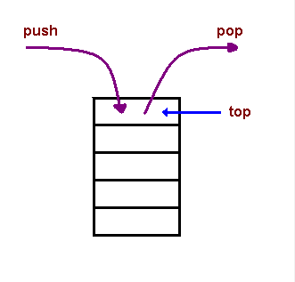

Motores de JavaScript
Lisandro Marchionni - 7º 3ª
JavaScript ha evolucionado de ser solo un lenguaje
web a ser un lenguaje multipropósito, utilizado en tanto en Front-end,
Back-end y móviles.
Por eso, al igual que el lenguaje, los diferentes motores fueron evolucionando
desde la creación del primer motor SpiderMonkey en 1995.
Los 3 motores más utilizados son
V8 Engine utilizado por
- Chrome
- Navegadores basados en Chromium
- NodeJS
Los 3 motores más utilizados son
V8 Engine utilizado por Chrome
SpiderMonkey utilizado por Firefox
Los 3 motores más utilizados son
V8 Engine utilizado por Chrome
SpiderMonkey utilizado por Firefox
JavaScriptCore ❨Nitro❩ utilizado por Safari
Los motores utilizan diferentes técnicas para realizar optimización a la hora de la ejecución, como la Just-In-Time Compilation, el Memory Heap y el Call Stack.
El diagrama de ejecución de V8

Aunque diferentes motores de JavaScript lo hacen de forma diferente, la Just-In-Time Compilation básicamente es el análisis del código mientras es ejecutado y compilado, y hace notas sobre cuantas veces se ejecuta cierto código y que tipos de datos son usados.
Cuando una porción de código es utilizado pocas veces, se considera que esa porción del códido es cálida -o worm- y cuando se utiliza muchas veces se la considerara caliente -o hot.

Este análisis permite elegir compilar únicamente el código que más usa, el codigo hot, mientras que el código ejecutado en menos ocasiones es interpretado.
JIT Compilation no sirve mucho en la optimización para programas de corta duración, pero en aplicaciones web modernas donde la ejecución del código puede durar horas, esta optimización termina siendo notable.
El Call Stack
Cuando se ejecuta un programa en el navegador, las funciones que se van ejecutando
se van almacenando en el Call Stack. Esto permite al navegador seguir el paso
del programa, y cuando se llama a una función B() dentro de A(),
no olvidar donde quedamos en A() despues de ejecutar dicha función B().
Un ejemplo pŕactico:
function DrawPoints() {
...
}
function setup() {
DrawPoints();
}
setup();
Este código, aunque escueto, sirve para ejemplificar la pila de ejecución.
En una primera instancia, cuando se ejecuta el programa por primera vez, podemos ver en la pestaña Call Stack que se llama a la función anonymous.

Esta función es el navegador mismo que ejecuta el código "suelto" en el archivo JS.
Como podemos observar, la primera función a ejecutarse es setup(),
y el cursor se ubica dentro de la función.
A la derecha, se puede observar como se agrego setup() por encima de
de la función anonymous. A nivel interno, también se guarda en qué linea
se llamó a la función setup().
Al igual que cuando se ejecutó setup(), cuando entramos
en la función DrawPoints(), se agrega el nombre de la función arriba de
setup().

Esto se puede repetir hasta un cierto límite, que varía según el motor de JavaScript, así como las variables de entorno en el caso de NodeJS.
A medida que se termina de ejecutar la función que esta en la cima de pila, se la irá retirando, y se continuará por donde diga el elemento inferior en la pila.
El Memory Heap
El memory heap es un lugar de almacenamiento para las variables globales, que además soporta locación de memoria dinámica. Estructuralmente, se diría que es como un "espacio flotante" en la memoria.
El único momento en el que se elimina el heap es cuando se libera ese espacio de la memoria o se termina la ejecución del programa.
Un gran detalle a tener en cuenta es el memory leaking. Es cuando en el medio de la ejecución se pierden los punteros -direcciones hacia la memoria- de las variables almacenadas en el heap.
Se podría decir que cuando ocurre el memory leaking, perdes acceso a las variables, provocando que queden dando vuelta en memoria hasta que el programa finalize y el sistema operativo las remueva manualmente.
Como podemos ver en el ejemplo a continuación, una característica del Heap es que cuando
una variable hace referencia a otra -como en la última línea-, no se copia los datos y se crea otra
variable, si no que utiliza el puntero de person y lo comparte con newPerson.
Los hilos de ejecución
Después de conocer el Call Stack, podemos sacar la conclusión que se puede ejecutar una sola función a la vez. Esto es ya que JavaScript en el navegador es monohilo. En los navegadores modernos, se asigna solamente un hilo de ejecución a cada pestaña del navegador.
También cabe mencionar que por esta misma característica, si en alguna parte de la ejecución el programa se congela, el resto de la interacción con JavaScript de la página será bloqueado.
¿Se pueden utilizar más de un hilo?
Si... y no. Existen nuevas tecnologías como WebWorker que permiten la ejecución de JavaScript en otro hilo, pero es como ejecutar otro programa que también es monohilo.
Existen los Dedicated Workers que son instanciados por el proceso principal y solo pueden comunicarse con él, y los Shared Workers que son accesibles por múltiples scripts que se original del proceso principal -otras pestañas, iframes, etc.
¿Qué son los Callbacks?
Según Mozilla Developers Network,
una función de callback es una función que se pasa a otra función como un argumento, que luego se invoca dentro de la función externa para completar algún tipo de rutina o acción.
¿Qué son los callbacks?
Cuando pasamos una función como argumento, podemos observar que unicamente pasamos la definición de la misma. Esto nos permite despues llamar a esa función desde el nombre del parámetro.
function haceAlgo(callback) {
callback()
}
function decirHola() {
console.log('hola');
}
hacerAlgo(decirHola);
Ejecución asíncrona con callbacks
Al ser monohilo, la ejecución de JavaScript es síncrona: se ejecuta una orden atras de otra.
Gracias a los callbacks, podemos crear cierto tipo de asíncronismo gracias a la
función setTimeout. Esta permite la ejecución de cierto código mínimo X milisegundos después.
setTimeout(function(){
console.log("Esto debería aparecer primero");
}, 50);
console.log("Sorpresa!");
// Sorpresa!
// Esto debería aparecer primero
A tal fin, dispara un timer en un contexto externo y registra el callback para ser
ejecutado una vez que el timer termine.
Un callback que se añade al loop de eventos debe esperar su turno. Si por ejemplo el código anterior se ejecutar en 0ms en vez de 50ms, de igual forma no se ejecutaría de forma instantánea. Debe esperar por lo menos el primer tick, y que se libere el callstack.
¿Y qué sobre las Promesas?
Las promesas son una nueva forma de trabajar con JavaScript asíncrono. El valor retornado por una consulta podría estar disponible ahora o en a futuro.
Cuando llamamos a una promesa, creamos un objeto que garantiza que ese proceso terminará. Luego de esto, nosotros podemos pasarle dos parámetros callbacks por si la promesa resulto exitosa o fue rechazada. Un ejemplo puede ser:
const currentURL = document.URL.toString();
const promise = fetch(currentURL);
promise.then(result => console.log(result),
e => console.log(`Error capturado: ${e}`));
Una característica muy particular es que se pueden concatenar promesas, haciendo que la sintaxis sea aún más legible.
fetch(document.URL.toString())
.then(result => {
console.log(result);
return "Primer Then";
},
e => console.log(`Error capturado: ${e}`))
.then(result => console.log(`Segundo Then despues de ${result}: La página ya ha debido ser mostrada`),
e => console.log(`Error capturado: ${e}`));
Para finalizar, cabe mencionar la existencia de un nuevo estandar para trabajar de forma asíncrona: funciones async / await.
Aportan no solo una mayor compresión de sintaxis, sino también una forma mucho más fácil de crear promesas si necesidad de complicarnos.
async function getProcessedData(url) {
let v;
try {
v = await downloadData(url);
} catch(e) {
v = await downloadFallbackData(url);
}
return processDataInWorker(v);
}
*Esta sintaxis puede no estar soportada en su totalidad por los motores de JavaScript, es una especificación del 2017.
Fuentes:
JavaScript Engines: An OverviewThe V8 JavaScript Engine
Compilación en tiempo de ejecución
A crash course in just-in-time (JIT) compilers
Stack vs Heap
What is a Memory Heap
Multithreading con Javascript: Web Workers.
Callback en JavaScript
JavaScript Asíncrono, la guía definitiva.
Async / Await